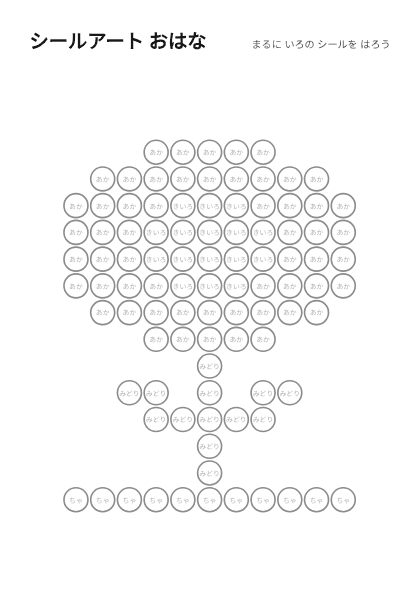
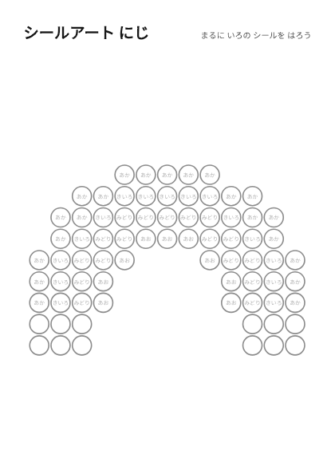
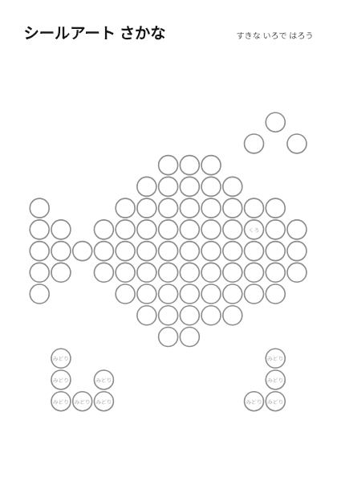
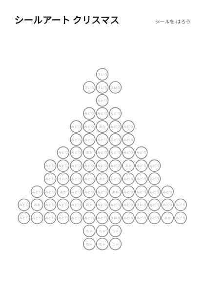
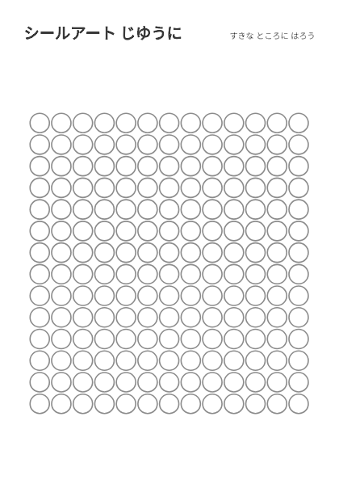
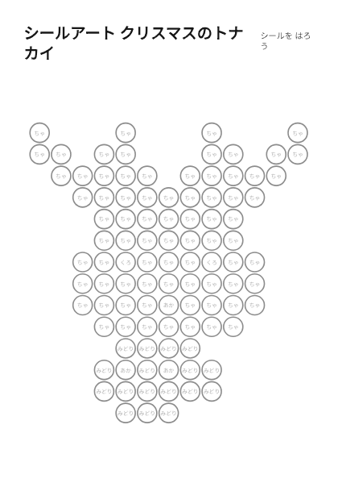

ホーム > シールアート
シールアート
小さな丸いシールを、台紙の丸に貼って絵をつくるシートです。丸の大きさは約12mmで、直径8〜10mmほどの丸シールが使えます。

シールアート おはな丸シール用・色のめやす付き
シールアート にじ丸シール用・色のめやす付き
シールアート さかな丸シール用・すきな色で
シールアート クリスマスツリー丸シール用・色のめやす付き・季節
シールアート じゆうに つくろう丸だけの台紙・すきな絵を シールアート クリスマスのきょうりゅう丸シール用・色のめやす付き・季節
シールアート クリスマスのきょうりゅう丸シール用・色のめやす付き・季節 シールアート クリスマスのプリンセス丸シール用・色のめやす付き・季節
シールアート クリスマスのプリンセス丸シール用・色のめやす付き・季節 シールアート クリスマスのトラック丸シール用・色のめやす付き・季節
シールアート クリスマスのトラック丸シール用・色のめやす付き・季節
シールアート クリスマスのトナカイ丸シール用・色のめやす付き・季節 シールアート クリスマスのサメ丸シール用・色のめやす付き・季節
シールアート クリスマスのサメ丸シール用・色のめやす付き・季節
使い方
- 直径8〜10mmほどの丸シールを用意します(色の名前が書いてある丸は、その色のシールがめやすです)。
- 丸の中に、1つずつシールを貼っていきます。貼る順番や色は自由です。
- 全部の丸に貼らなくても大丈夫です。すきな色や並べ方で、自分だけの絵にしてみます。